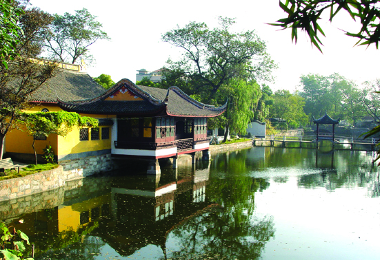

嘉兴市文物保护网 · 市级文物保护单位 · 2014-06-17 · 原文

范蠡湖位于嘉兴市南湖区建设街道杨柳湾社区环城南路703号，相传春秋时越国大夫范蠡助越王勾践灭吴后，携西施隐居于此，范蠡湖由此得名。目前，湖长约100米，宽约15米，占地约5351平方米。范蠡湖边原有范蠡祠，后改金明寺，建于南宋开禧元年（1025），寺额从海盐半逻废金明寺移来，历经修葺。明代有三大殿，步廊10余间，有湖天海月阁，为嘉兴名刹之一。清代寺宇大部废毁，仅余前殿。范蠡湖还有西施冢之称，相传西施死后葬于湖中，北岸筑有水轩一座，名“西施妆台”，为歇山顶抬梁式建筑。范蠡湖多石刻，妆台北面墙中有“少伯祠”白玉石匾一块，东侧湖上有西施石雕像及“沉鱼”二字石刻，妆台北立面上有文徵明手书“浮碧”二字石刻，外墙上有明车大任所书“放生池”、池郭所书“陶朱公里”等。另外，还有清乾隆时钱陈群所作《重建金明寺碑记》及王蘧常、谭建丞、张振维等名家墨迹。范蠡湖历史悠久，建筑风格古朴，景致错落有致，名家手迹颇多，具有较高的历史和艺术价值。1981年公布为嘉兴市级文物保护单位。